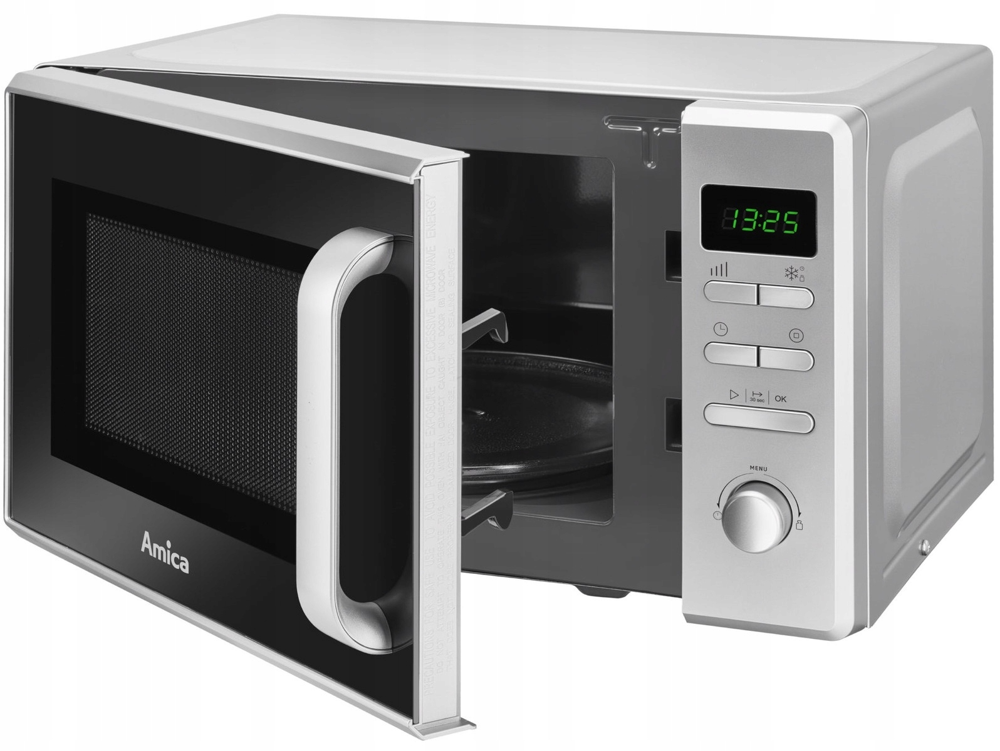

">
Технологические зависимости
Введение:
Итак, что такое технологическая зависимость?
Распространенность технологической зависимости
Какие виды технологий могут вызвать зависимость?
Факторы риска, связанные со злоупотреблением гаджетами
Что вызывает технологическую зависимость?
Как гаджеты вызывают зависимость?
Признаки технологической зависимости
Диагностика технологической зависимости
Критерии диагностики технологической зависимости
Меры против технологической зависимости
Ссылки
Перечень зависимостей:
- Социальные сети
- Игры
- Микроволновка
- Смартфоны и планшеты. Эти мобильные устройства обеспечивают легкий и постоянный доступ к Интернету и различным приложениям. Благодаря удобству и доступности устраняется временной барьер, который существовал раньше.
- Интернет. Расстройство, связанное с использованием Интернета, является наиболее распространенной формой технологической зависимости. Обычно это проявляется в чрезмерной онлайн-активности в социальных сетях, поиске в Интернете и постоянном использовании смартфонов. Многие, кто страдает от этого типа зависимости, боятся, что не смогут узнать последние новости или отстать от культурных трендов.
